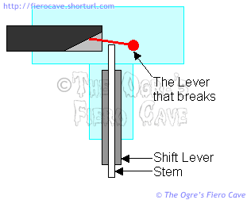
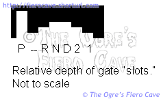
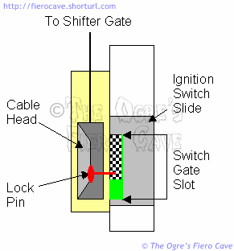
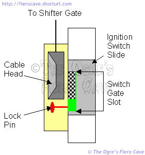

Go Home
Site Map
Go Home
Site Map
I can't move the shifter!
(Or I can't remove the ignition key.)
Before you do anything else... take out the ashtrays and look under the shifter. The layout of the Fiero center console makes it very easy for trash and change to get in or under the shifter. It's hard to see/reach under there so you'll likely need to remove the shift surround...
- Factory shift knobs are held in place by a clip on the front. Just pull out the clip
- 4 screws under the ashtrays hold down the Shift Surround. (Factory screws have 7mm heads.)
Clean and Lube
DO NOT use oil and solvents on plastic jacket cables or plastic bushings!
The oil may seem to make things better in the short term but it will hold dirt and work it in even deeper. Whatever problem you were trying to fix will usually return and be even worse in the not distant future. Oil and solvents could swell the plastic or make it brittle. (Or Worse... Some solvents could eat the plastic.)
Plastic bushings and cable jackets are supposed to be used dry. If you wish to lubricate these types of parts, use a "dry" Teflon spray. These products will evaporate leaving just the Teflon behind. The Teflon won't draw/hold dirt in the parts and there won't be any solvent/oil left to damage the plastic.
To clean the plastic parts, try soap and water. Simple Green, citrus based cleaners and things like this will get dirt off without damaging the plastic. If you cannot easily wash the part, use something like Alcohol that will evaporate easily.
On plastic parts that do get lubricated, like the stem in the shift lever, use "White" Lithium grease or brake grease. These won't damage plastics.
Nothing in there jamming it... Now what?
These problems usually won't be an interlock cable out of adjustment. Once these are adjusted at the factory they are usually good for the life of the car.
The interlock cable is pretty reliable. If it should some how get out of adjustment then it could hang up the shifter button or the key. The adjuster for this cable is on the front side of the shifter hardware. Before you mess with it, note/mark where it starts off, as you may need to return it to that position later.
Check for a bad T knob.
There is a plastic lever inside the factory T knob. When you push the button, it pushes this lever, which then pushes a stem down the shift lever. Sometimes this little lever breaks or wears out. When broken it obviously won't be able to push down the stem but it can also jam so that the stem can't pop up. If the stem can't pop up then you won't be able to remove the ignition key.
To check it, take the knob off. To shift the car, push directly on the plastic stem that goes down thru the lever. (Be careful you don't damage the stem.) To make it easier, use a coin on top of the stem.
Note that if you have a leather T knob, you can use parts from the plastic version to fix it. Just take out the clip that holds the button and everything should drop right out.
Check the Stem
I've not seen it happen but it's possible for the stem that runs inside the shift lever to break or get dislocated on the bottom. Either one will jam the shifter and maybe the key.
If the stem is messed up, check the gate hardware carefully. If something is bent there, it could break/jam again even if you put in a new stem.
For reference... The stem in my factory shifter is 173mm long.
If you still can't move the shifter...
Disconnect the shift arm or cable bracket from the transmission. This is often better for the cable than trying to remove the cable from the arm. If the shifter moves now, you've likely got a transmission or transmission cable problem.
If it still will not move, the shifter hardware/cable has problems, the interlock cable could be out of adjustment, or there is a problem at the ignition switch.
Again, it would be pretty strange for the interlock cable to go out of adjustment but it is possible. A more likely culprit is something in the shifter hardware is worn or bent. If the wear/bend is slight, you may be able to compensate by tweaking the interlock cable a couple teeth one way or another.
Other than breaking completely, I've never seen a problem on the ignition switch hang up the cable but it is possible, especially if someone messed up the switch during steering column work.
If you still can't remove the key...
Does the key release if you wiggle the shifter? If this is the case then try adjusting the transmission cable. If this cable is a hair off it can keep the gate from dropping all the way into the park slot. That in turn prevents the key from releasing.
It could be a binding pin in the interlock head. On rare occasions the spring on the pin could fail to extract the pin from the switch. More likely is that the problem is something in the column like a bad ignition lock. The ignition lock is a pretty common failure item.
How it works
When the shifter is in park, the gate will drop into an extra deep slot and unlock the ignition so you can remove the key. Only the park slot is deep enough to release the key. (The "blank" position really does exist. It prevents you dropping from reverse to park without pushing the button.)

In the next drawings, we see the ignition switch end of things. First, the Car is running with the shifter in any position other than Park. See how the lock pin is pushed into the ignition slide by the interlock cable. The slide motion is now restricted to the checkered area of its gate slot.

With the Transmission in park, the Interlock Cable has moved off the pin and it has popped out of the switch so the Key can be removed or turned to ACC. Notice that in this position the pin is now blocked from entering the switch. This also keeps the shifter gate locked so you can't move the lever from park. It won't even let you press the button.

Interlock Head Removal or Repair
If it becomes necessary to remove the interlock head from the ignition switch, there are two very small screws that you need to remove. When these screws are removed the cable head slides up and off the switch. Use great care when removing the cable head. DO NOT hit the shifter if the cable is still connected to the head! There is a plastic cap that holds the lock pin and a rather strong little spring in place. The glue holding the plastic cap tends to be weak and if it doesn't come apart during removal, it will come apart if you hit the shifter. Once you get the cable off, put the head into a plastic bag, along with the pin, spring, and cap, if it fell apart.
Note: The screws that hold the interlock to the switch are #1 Phillips heads. That's the fine one in most screwdriver sets.
If the cable head does come apart, and you manage not to lose any pieces, you can glue the cap back down with some of the 2 part epoxy style plastic cement. (Such as Versachem Plastic Welder.)
- Remove the tan interlock head from the cable by depressing the black tab on the cable.
- Clean all the parts.
- Apply glue SPARRINGLY in 2-3 places on the lip in the head opening. Don't get sloppy with this adhesive. It's Very strong, and sticks to most hard surfaces.
- Put the spring on the pin shank.
- Drop the pin and spring in the hole, fat end first.
- Put the cap in place and hold it down until the glue sets. This takes about 5-10 minutes.
The cable is now good as new, and won't easily come apart again.
If you do lose parts, or otherwise can't fix the cable head, then replace the interlock. It is far too easy to leave the car out of park without this interlock. Leaving the car out of park can result in personal injury and/or property damage. It could even kill some one. The interlock head can be removed from the cable so if you are getting a used part from the salvage yard you don't need to dig out the whole cable. I don't know if the interlock head is available as a separate part from GM. You may have to get the whole cable from them.